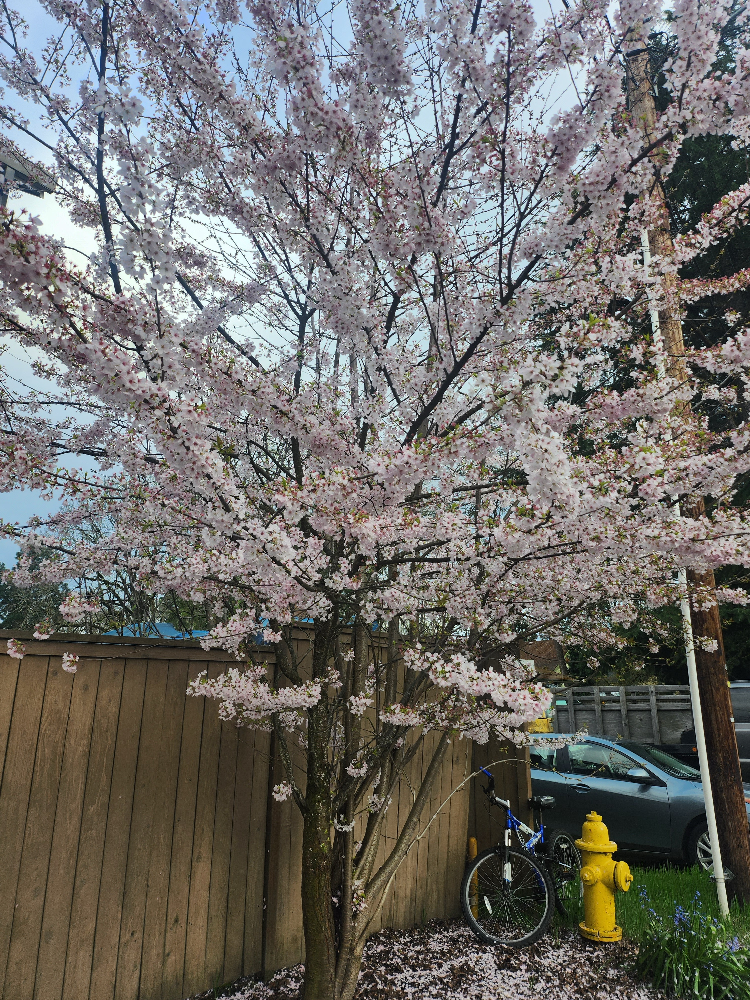

PNG Example

About This Image
This is a picture of a Yoshino cherry tree (Prunus × yedoensis) that I took a picture of while leaving from my barber. It was during its blossom season which looks beautiful in its bloom. Along with the scenenary I thought this picture was very aesthetically pleasing which is why I took this picture.
Why PNG Format?
This picture of a cherry tree in bloom is good for PNG format because PNG files keep the image clear and sharp. This helps the flowers look bright and detailed on a webpage. Which makes me happy because I think the tree looks wonderful in all its detail.